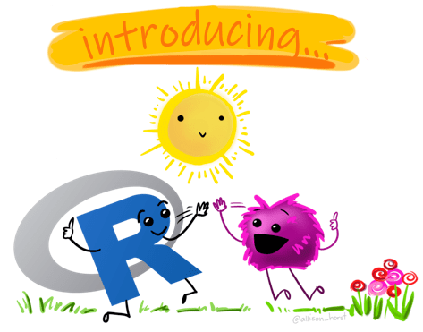
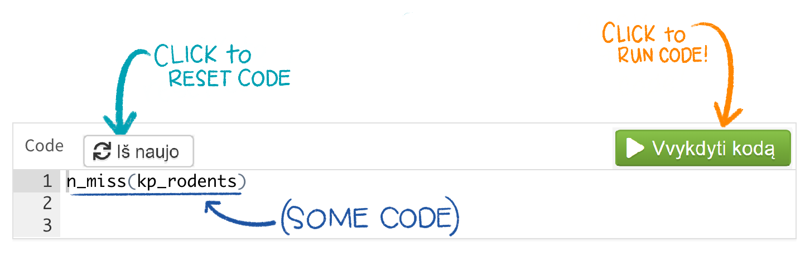
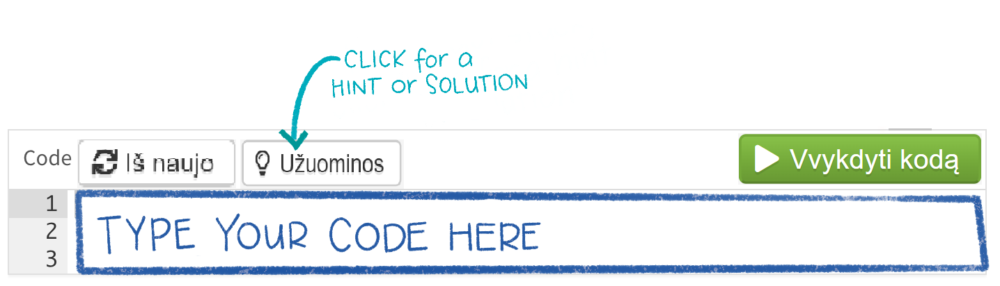
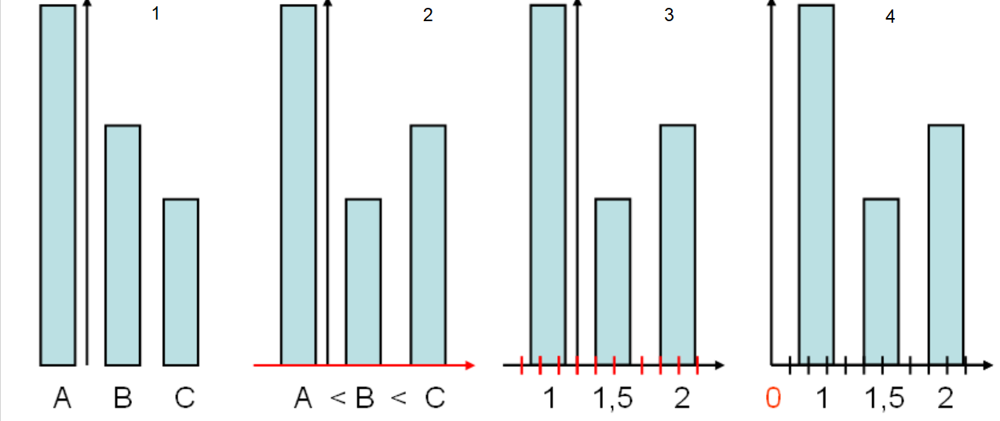
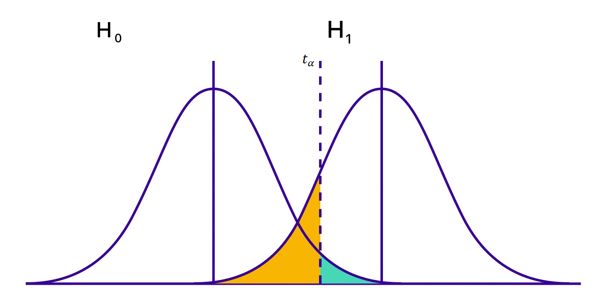
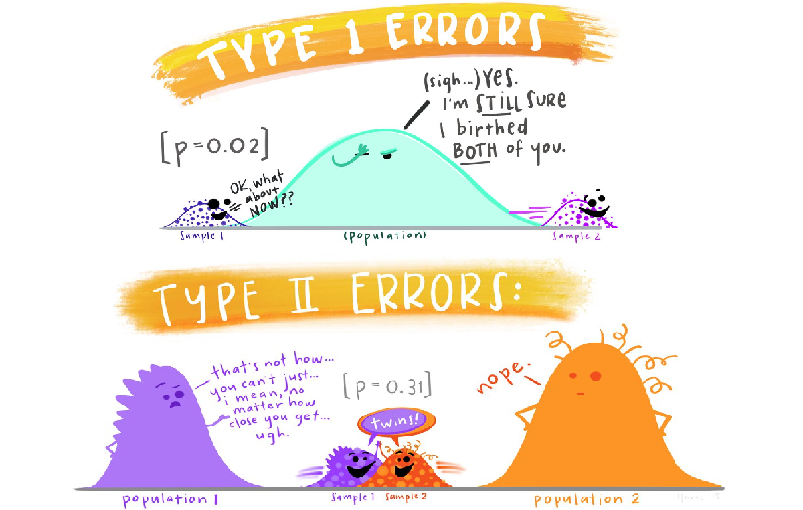
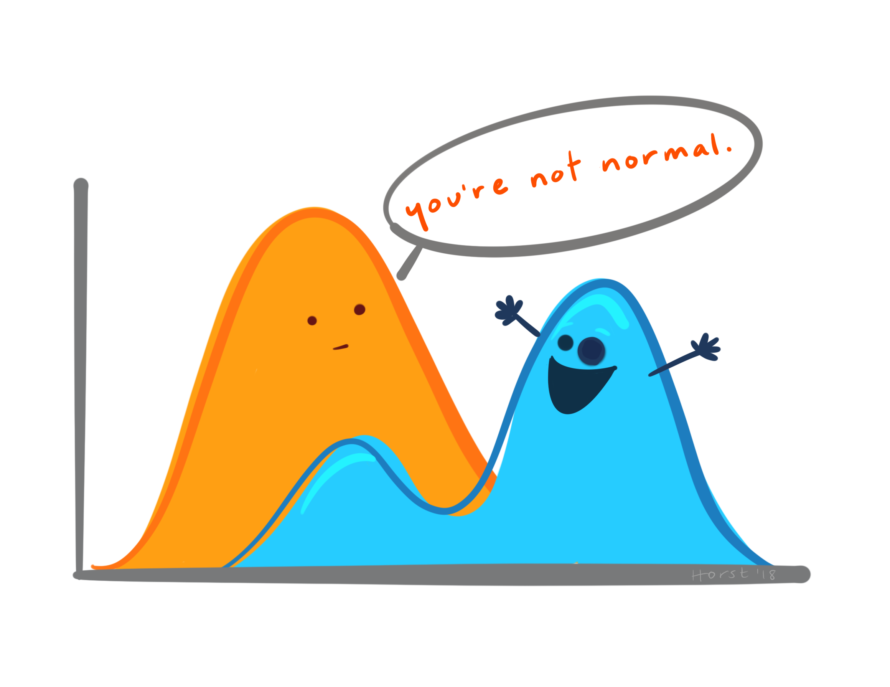
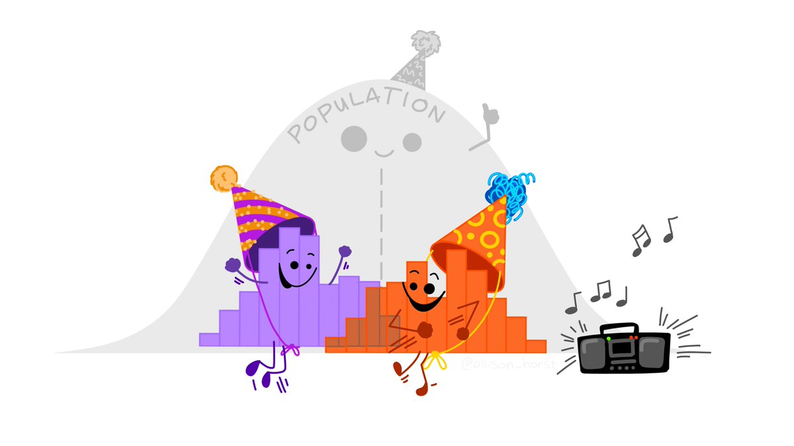
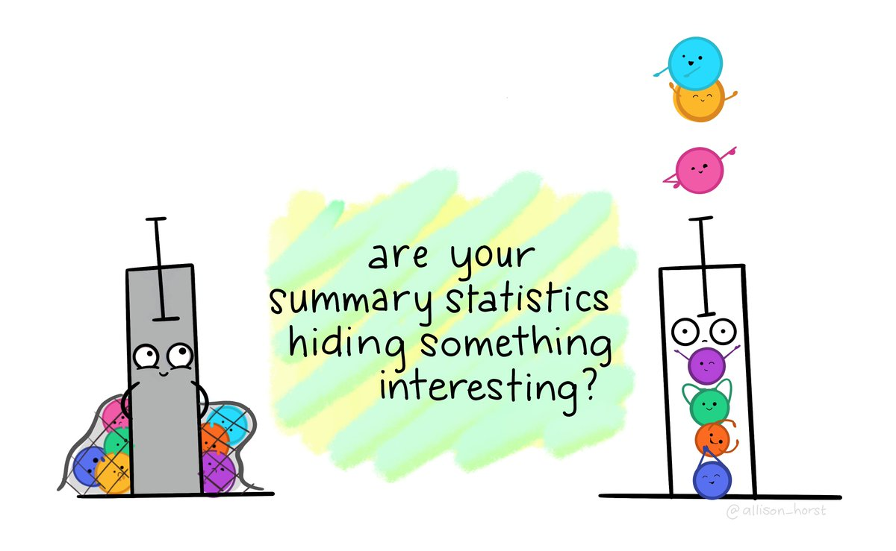
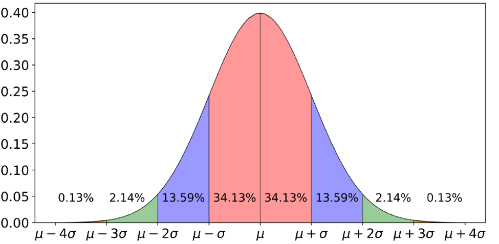

Įžanga

Šioje platformoje rasite mokymų medžiagą Lietuvos Statistikos
departamento viduje organizuojamiems mokymams, skirtiems tikslinėms
darbuotojų grupėms. Vienas pagrindinių šių mokymų siekių – platinti
Lietuvos Statistikos darbuotojų žinias ir gebėjimus atlikti statistinių
duomenų tinkamumo patvirtinimą, redagavimą, praleistų reikšmių įrašymą
naudojantis R programavimo kalba.
Teorinė mokymų medžiaga jau
yra parengta skaidrių pavidalu. Šioje platformoje turite galimybę
mokytis savarankiškai – peržiūrėti parengtą mokymų medžiagą, atlikti
praktines užduotis.
Antrojoje mokymų dalyje pateikiama naudinga
informacija apie:
- Kintamuosius: ir jų tipus pagal reiškinio kilmę ir matavimų skalę.
- Statistines hipotezes: (ne)atmetimo klaidas, taisykles ir statistinį reikšmingumą.
- Skirstinius: ir kaip juos vizualiai pateikti R programavimo kalba.
- Duomenų tikrinimą: ir tikrinimo taisykles.
- Išsiskiriančias reikšmes: normaliojo skirstinio grafike ir kaip jas apdoroti.
- Rėžių taisyklę: ir kaip ją apskaičiuoti naudojantis R.
- Istorinę (palyginimo) taisyklę: bei kam ją taikyti.
Kaip tai veikia?
Rasite klausimų su atsakymų variantais:
Rasite klausimų, kuriuose reikalinga išrikiuoti atsakymus pagal tam tikrą eilę:
Taip pat, dirbsite su R, kur programavimo kodas veiks lyg dirbant
tiesiogiai programoje. Paspauskite Ctr+Enter arba
Vykdyti kodą mygtuką, kad įvykdytumėte programą.

2+2Jeigu nerandate tinkamo atsakymo kodo langelyje, galite pasinaudoti
Užuomina , arba pasitikrinti atsakymą
Atsakymas mygtuku.
Nepamirškite pateikti atsakymo
paspausdami Pateikti atsakymą mygtuką, kur gausite
išsamesnį komentarą apie savo kodą anglų kalba.

2+2==5Ar suma teisinga?2+2==4Taip pat, prieš pradedant mokymus, svarbu nuspausti mygtuką
Perkrauti (kaip pažymėta paveikslėlyje). Tai užtikrina, kad
užduotys yra vykdomos nuo pradžių. Šį mygtuką galite naudoti kaskart,
kai norite perkrauti mokymų medžiagą ir ją įvykdyti iš naujo.

Iliustracijos
Ši mokymų platforma iliustruota paveikslėliais, kuriuos galite rasti šiuo adresu. Naudojant šias iliustracijas, cituokite jas taip: “Artwork by @allison_horst”.
Sėkmės!
1. Kintamieji
1.1. Kokiam kintamųjų tipui priskiriami duomenys gauti žemiau nurodytame aprašyme?

1.2. Kuriam kiekybinio kintamojo tipui priklauso šie duomenų pavyzdžiai:
1.3. Kintamųjų tipai pagal matavimo skalę
Kintamuosius galima klasifikuoti pagal naudojamą matavimų skalės tipą:
- Pavadinimų (arba nominalioji, klasifikavimo) skalė:
pagal kintamojo reikšmes, gautas naudojant pavadinimų skalę, tyrimo
objektus galima tik klasifikuoti, t. y. priskirti vienai ar kitai
klasei. Objektams arba objektų klasėms priskiriami simboliai (kategorijų
kodai). Jie tarpusavyje nepalyginami (net tuo atveju, kai yra
skaičiai).
- Rangų (arba tvarkos, eilės) skalė: ši skalė naudojama tada, kai galima nustatyti objektų tiriamo požymio skirtumus ir pagal tai objektus išrikiuoti į eilę. Pagal ranginių kintamųjų reikšmes objektus galima ne tik skirstyti į klases, bet ir jas sutvarkyti. Ar didesnis rangas (sutvarkytos eilės numeris) atitinka didesnį požymio kiekį ar svarbą, priklauso nuo rangų priskyrimo taisyklės. Rangai tarpusavyje gali būti lyginami tik eiliškumui nustatyti
- Intervalų skalė: matavimams naudojant intervalų skalę, objektus galima ne tik klasifikuoti, tvarkyti, bet ir kiekybiškai įvertinti skirtumus. Intervaliniai duomenys visada skaitiniai. Skirtumas (intervalas) tarp dviejų kintamojo reikšmių rodo, kiek daugiau ar mažiau matuojamo požymio yra viename tyrimo objekte, palyginti su kitu. Nulinis taškas intervalų skalėje yra laisvai pasirenkamas.
- Santykių skalė: nuo intervalų skalės skiriasi tik tuo, kad joje yra apibrėžta absoliuti atskaitos pradžia. Šioje skalėje yra absoliutusis nulis, t.y. nulinis taškas, rodantis, kad tiriamojo požymio nėra. Taigi rezultatai visuomet yra neneigiami skaičiai.

2. Statistinės hipotezės
Statistine hipoteze vadinamas bet koks teiginys apie tiriamosios
populiacijos skirstinį, jo parametro(-ų) reikšmę(-es) arba tiriamosios
populiacijos skirstinio ar jo parametrų lygybę kitiems skirstiniams ar
parametrams.
Statistinę hipotezę sudaro du alternatyvūs
teiginiai apie galimą skirstinį ar galimas parametro reikšmes: \(H_0\) – nulinė hipotezė ir \(H_1\) – alternatyvioji hipotezė
(alternatyva).
Atmesdami ar neatmesdami hipotezės \(H_0\), galime padaryti dviejų rūšių klaidas
(žemiau pažymėtas geltona bei mėlyna spalvomis):

2.1. (Ne)atmetimo klaidos: kuri klaida (\(I\) ar \(II\)) paveikslėlyje pavaizduota geltona spalva?
2.2. (Ne)atmetimo taisyklė: koks \(p\) reikšmingumo lygmuo?
P.S. Ši reikšmė yra dažniausiai naudojama, bet pasitaiko ir atvejų,
kuomet pasirenkama kitas, labiau tinkantis reikšmingumo lygmuo.
2.3. Atlikite t.test duoto kintamojo vidurkio lygybei
nuliui (\(H_0\)) patikrinti.
x = c(9.0,9.5,9.6,10.2,11.6)Jeigu nesate tikri, kaip naudoti t.test() funkciją - įrašykite ?t.test() R kodo laukelyje. x = c(9.0,9.5,9.6,10.2,11.6)
t.test(x)
3. Skirstiniai

3.1. Užpildykite tuščias vietas ir sugeneruokite dvi atsitiktines 2000 stebinių imtis.
set.seed(666)
normal_data <- rnorm(____)
log_normal_data <- rlnorm(____)Vietoje tuščių vietų įveskite skaičių 2000.3.2. Vizualiai patikrinkite 3.1. sugeneruotų skirstinių
pasiskirstymo normalumą histogramos funkcija hist(). Taip
pat, įveskite abiejų skirstinių normal_data ir
log_normal_data pavadinimus į paliktas tuščias vietas.
___(____, col='steelblue', main='Normalusis skirstinys', xlab = "Reikšmių pasiskirstymas", ylab = "Dažnis")
___(____, col='steelblue', main='Log normalusis skirstinys', xlab = "Reikšmių pasiskirstymas", ylab = "Dažnis")hist(normal_data, col='steelblue', main='Normalusis skirstinys', xlab = "Reikšmių pasiskirstymas", ylab = "Dažnis")
hist(log_normal_data, col='steelblue', main='Log normalusis skirstinys', xlab = "Reikšmių pasiskirstymas", ylab = "Dažnis")3.3. Patikrinkite, ar skirstiniai yra normalieji su Kolmogorov-Smirnov testu. Įveskite imčių pavadinimus į tuščias vietas.
ks.test(___, "pnorm")
ks.test(___, "pnorm")ks.test(normal_data, "pnorm")
ks.test(log_normal_data, "pnorm")Kadangi Kolmogorov-Smirnov testas yra reikšmingas
log_normal_data skirstiniui, galime teigti, kad jis nėra
normaliai pasiskirstęs. Atvirkščiai skirstiniui pavadinimu
normal_data.
3.4. Logoritmuokite log-normalųjį skirstinį (1 kodo eilutė), grafiniu būdu patikrinkite jį vizualiai (2 kodo eilutė) ir atlikite Kolmogorov-Smirnov testą (3 kodo eilutė).
log_normal_data_log <- ___(log_normal_data)
___(log_normal_data_log, col='steelblue', main='Log log-normalusis skirstinys', xlab = "Reikšmių pasiskirstymas", ylab = "Dažnis")
___(log_normal_data_log, "pnorm")Naudokite log() hist() ir ks.test() funkcijomis atititnkamiems žingsniams įvykdyti. log_normal_data_log <- log(log_normal_data)
hist(log_normal_data_log, col='steelblue', main='Log log-normalusis skirstinys', xlab = "Reikšmių pasiskirstymas", ylab = "Dažnis")
ks.test(log_normal_data_log, "pnorm")
Į sistemą jau importuota duomenų lentelė pavadinimu
duomenys.
Kintamieji:
kodas9: įmonės kodasevrk2: įmonės ekonominės veiklos rūšies kodasimtis: patekimo į imtį indikatoriusviso: bendra ataskaitinio laikotarpio įmonės apyvartaval: visos ataskaitinį laikotarpį dirbtos įmonės darbuotojų valandosviso_prm_ket: bendra praeitų metų atitinkamo laikotarpio įmonės apyvartaviso_pr_ket: bendra praeito laikotarpio įmonės apyvartapvm: įmonės apyvarta pagal PVM ataskaitų duomenisDSK: vidutinis ataskaitinio laikotarpio įmonės darbuotojų skaičius
3.5. Modifikuokite žemiau esantį R kodą, kad matytumėte tik pirmąsias 6 eilutes.
duomenyshead(duomenys)3.6. Pašalinkite tuščias reikšmes iš stulpelių pavadinimu
viso bei pvm (realioje situacijoje tokias
reikšmes reikėtų atskirti į kitą lentelę ir peržiūrėti).
duomenys1 <- ___ %>%
filter_at(vars(___, ___), all_vars(!is.na(.)))
View(duomenys1)Įveskite duomenų rinkinio bei kintamųjų pavadinimus. duomenys1 <- duomenys %>%
filter_at(vars(viso, pvm), all_vars(!is.na(.)))
View(duomenys1)3.7. Pridėkite prie žemiau esančio R kodo aiškesnius pavadinimus
vizualizacijai, pvz. xlab = "PVM apyvarta" bei
ylab = "Statistinio tyrimo apyvarta".
plot(duomenys1[,c("pvm","viso")], col= 'steelblue', main=' Log log-normalusis skirstinys')Nepamirškite, prieš rašant x ir y ašių pavadinimus, po ] skliaustelio padėti kablelį (,).plot(duomenys1[,c("pvm","viso")], col= 'steelblue', main= 'Log log-normalusis skirstinys', xlab = "PVM apyvarta", ylab = "Statistinio tyrimo apyvarta" )4. Duomenų tikrinimas

4.1. Surikiuokite pagal pateiktų apibrėžimų eilę:
4.2. Nustatykite standartinį pvm nuokrypį.
duomenys$pvm, na.rm=TRUEGalite naudotis sd() funkcija. sd(duomenys$pvm, na.rm=TRUE)5. Išsiskiriančios reikšmės (išskirtys)

Dažniausiai naudojami priimtinumo intervalai: \[(\mu −𝟐\sigma, \mu +2\sigma) ir (\mu−𝟑\sigma, \mu+𝟑\sigma )\] Pirmojo intervalo taikymas dažnai vadinamas dviejų sigma, o antrasis – trijų sigma taisykle. Į pirmąjį intervalą netelpančios, tačiau patenkančios į antrąjį intervalą reikšmės dažnai vadinamos sąlyginėmis išskirtimis, o netelpančios ir į platesnįjį intervalą – išskirtimis.
5.1. Tarkime, mūsų priimtinumo intervalas yra dviejų sigmų taisyklė, o išskirtimis laikome reikšmes besiskiriančias 4-iomis sigmomis. Peržvelkite žemiau esantį grafiką ir atsakykite į klausimą:

5.2. Patikrinkite ar yra išsiskiriančių reikšmių
duomenys bazėje, pvm stupelyje, naudojantis
žemiau pateiktu kodu, pakeiskite jų spalvą.
duomenys %>%
select(pvm) %>%
drop_na() %>%
ggplot() +
aes(x = log(pvm)) +
geom_boxplot() Spalvą galite pakeisti įvesdami spalvos pavadinimą į geom_boxplot, pvz. geom_boxplot(outlier.color = "navyblue") duomenys %>%
select(pvm) %>%
drop_na() %>%
ggplot() +
aes(x = log(pvm)) +
geom_boxplot(outlier.color = "navyblue") 5.3.Vizualiai patikrinkite ar yra išsiskiriančių reikšmių
duomenys bazėje, viso stupelyje. Grafinis
sprendimas analogiškas 5.2.
duomenys %>%
select(viso) %>%
drop_na() %>%
ggplot() +
aes(x = log(viso)) +
geom_boxplot() 5.4. Patikrinkite ar yra išsiskiriančių reikšmių
duomenys bazėje, lyginant pvm bei
viso stupelius, pakeiskite išskirčių spalvą.
duomenys %>%
select(pvm, viso) %>%
drop_na() %>%
ggplot() +
aes(x = ___, y = ___, ___ = viso & pvm > 1.1e+8) +
geom_point() X ašyje įveskite pvm, y ašyje - viso. Galiausiai, nepamirškite pakeisti spalvos su funkcija color = .duomenys %>%
select(pvm, viso) %>%
drop_na() %>%
ggplot() +
aes(x = pvm, y = viso, color = viso & pvm > 1.1e+8) +
geom_point()6. Rėžių taisyklė
Rėžių taisyklė taikoma, kai du ar daugiau kintamųjų, nesusijusių
apibrėžtomis formulėmis, gali būti susieti apytiksliu santykiu, pvz.,
jei kintamasis \(X=𝐴\), tai kintamasis
\(𝑌\) turi būti tarp \(𝐵\) ir \(𝐶\).
6.1. Apskaičiuokite apatinį ir viršutinį rėžį viso
išskirtims.
q <- quantile(___$___, probs = c(0.25,0.75), type = 2, na.rm = T)
IQR <- IQR(___$___, type = 2, na.rm = T)
apat_rez <- unname(q[1]-3*IQR)
virs_rez <- unname(q[2]+3*IQR)
cat("Tarpkvartilinis skirtumas: IQR =",IQR,"\n",
"Priimtinumo intervalas: [",apat_rez, ";",virs_rez, "]")
isskirtys <- data.frame(duomenys, TIKRINTI = ifelse(___$___ < apat_rez | ___$___ > virs_rez, 1, 0))
View(isskirtys)Pabrauktose vietose įveskite tikrinamų kintamųjų pavadinimus, t.y `duomenys` ir `viso`.q <- quantile(duomenys$viso, probs = c(0.25,0.75), type = 2, na.rm = T)
IQR <- IQR(duomenys$viso, type = 2, na.rm = T)
apat_rez <- unname(q[1]-3*IQR)
virs_rez <- unname(q[2]+3*IQR)
cat("Tarpkvartilinis skirtumas: IQR =",IQR,"\n",
"Priimtinumo intervalas: [",apat_rez, ";",virs_rez, "]")
isskirtys <- data.frame(duomenys, TIKRINTI = ifelse(duomenys$viso < apat_rez | duomenys$viso > virs_rez, 1, 0))
View(isskirtys)
7. Istorinė (palyginimo) taisyklė